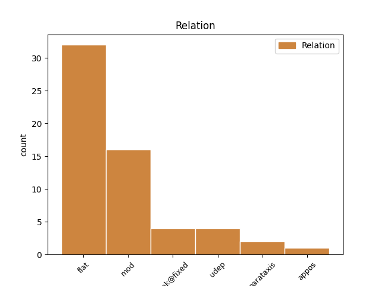
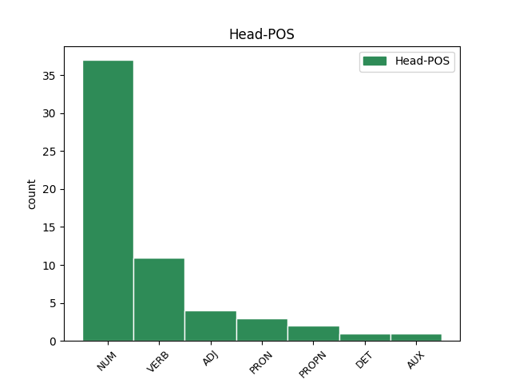
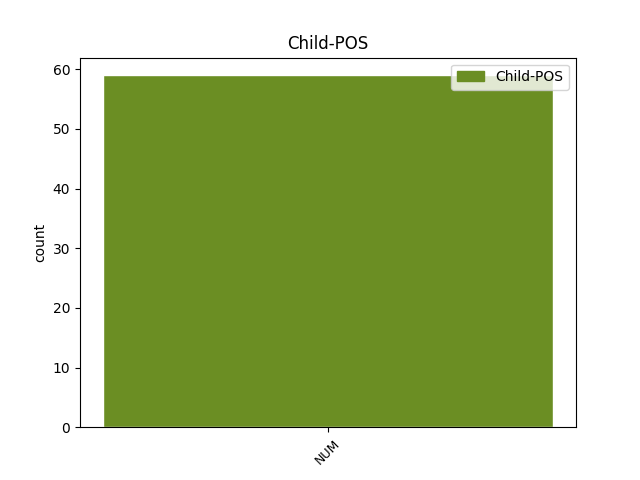

Distribution of features within this leaf



Agreement Rules sorted by frequency.
- When the dependent token is the flat multiword expression(flat) of the head token, and the head token is NUM and the dependent token is NUM.
1 in _ _ _ _ 0 _ _ _
2 zgolj _ _ _ _ 0 _ _ _
3 za _ _ _ _ 0 _ _ _
4 primer _ _ _ _ 0 _ _ _
5 preko _ _ _ _ 0 _ _ _
6 sto sto NUM Mlc-pa Case=Acc|Number=Plur|NumForm=Word|NumType=Card 0 _ _ _
7 tisoč tisoč NUM Mlc-pa Case=Acc|Number=Plur|NumForm=Word|NumType=Card 6 flat _ msd=Kbg-mt|word=tisoč
8 evrov _ _ _ _ 0 _ _ _
9 da _ _ _ _ 0 _ _ _
10 naša _ _ _ _ 0 _ _ _
11 država _ _ _ _ 0 _ _ _
12 tudi _ _ _ _ 0 _ _ _
13 delavka _ _ _ _ 0 _ _ _
14 mure _ _ _ _ 0 _ _ _
15 tudi _ _ _ _ 0 _ _ _
16 vsi _ _ _ _ 0 _ _ _
17 mi _ _ _ _ 0 _ _ _
18 za _ _ _ _ 0 _ _ _
19 to _ _ _ _ 0 _ _ _
20 da _ _ _ _ 0 _ _ _
21 leto _ _ _ _ 0 _ _ _
22 dni _ _ _ _ 0 _ _ _
23 stoji _ _ _ _ 0 _ _ _
24 plakat _ _ _ _ 0 _ _ _
25 v _ _ _ _ 0 _ _ _
26 b _ _ _ _ 0 _ _ _
27 [gap] _ _ _ _ 0 _ _ _
28 na _ _ _ _ 0 _ _ _
29 bruseljskem _ _ _ _ 0 _ _ _
30 letališču _ _ _ _ 0 _ _ _
1 no _ _ _ _ 0 _ _ _
2 ameriška _ _ _ _ 0 _ _ _
3 vojska _ _ _ _ 0 _ _ _
4 ta _ _ _ _ 0 _ _ _
5 trenutek _ _ _ _ 0 _ _ _
6 šteje _ _ _ _ 0 _ _ _
7 približno _ _ _ _ 0 _ _ _
8 petsto _ _ _ _ 0 _ _ _
9 štirideset _ _ _ _ 0 _ _ _
10 tisoč _ _ _ _ 0 _ _ _
11 mož _ _ _ _ 0 _ _ _
12 od _ _ _ _ 0 _ _ _
13 tega _ _ _ _ 0 _ _ _
14 jih _ _ _ _ 0 _ _ _
15 imajo imeti VERB Vmpr3p-n Aspect=Imp|Mood=Ind|Number=Plur|Person=3|Polarity=Pos|Tense=Pres|VerbForm=Fin 0 _ _ _
16 kar _ _ _ _ 0 _ _ _
17 sto sto NUM Mlc-pa Case=Acc|Number=Plur|NumForm=Word|NumType=Card 15 mod _ msd=Kbg-mt|word=sto
18 štiriinštirideset _ _ _ _ 0 _ _ _
19 tisoč _ _ _ _ 0 _ _ _
20 v _ _ _ _ 0 _ _ _
21 iraku _ _ _ _ 0 _ _ _
1 tedaj _ _ _ _ 0 _ _ _
2 pa _ _ _ _ 0 _ _ _
3 eno _ _ _ _ 0 _ _ _
4 drugo _ _ _ _ 0 _ _ _
5 poišči _ _ _ _ 0 _ _ _
6 ta _ _ _ _ 0 _ _ _
7 žena _ _ _ _ 0 _ _ _
8 tako _ _ _ _ 0 _ _ _
9 stara _ _ _ _ 0 _ _ _
10 ven _ _ _ _ 0 _ _ _
11 izgleda _ _ _ _ 0 _ _ _
12 eno en NUM Mlpfsa Case=Acc|Gender=Fem|Number=Sing|NumForm=Word|NumType=Card 13 mod _ msd=Kbzzet|word=hanu
13 mlajšo mlad ADJ Agcfsa Case=Acc|Degree=Cmp|Gender=Fem|Number=Sing 0 _ _ _
14 poišči _ _ _ _ 0 _ _ _
15 a _ _ _ _ 0 _ _ _
16 tukaj _ _ _ _ 0 _ _ _
17 je _ _ _ _ 0 _ _ _
18 še _ _ _ _ 0 _ _ _
19 heidi _ _ _ _ 0 _ _ _
20 notri _ _ _ _ 0 _ _ _
1 pa _ _ _ _ 0 _ _ _
2 to _ _ _ _ 0 _ _ _
3 za _ _ _ _ 0 _ _ _
4 vaju ti PRON Pp2-da Case=Acc|Number=Dual|Person=2|PronType=Prs 0 _ _ _
5 dva dva NUM Mlcmda Case=Acc|Gender=Masc|Number=Dual|NumForm=Word|NumType=Card 4 mod _ msd=Kbgmdt|word=vajidva[split_2-2]
6 tudi _ _ _ _ 0 _ _ _
7 pa _ _ _ _ 0 _ _ _
8 što _ _ _ _ 0 _ _ _
9 tako _ _ _ _ 0 _ _ _
10 koga _ _ _ _ 0 _ _ _
11 po _ _ _ _ 0 _ _ _
12 [gap] _ _ _ _ 0 _ _ _
13 eee _ _ _ _ 0 _ _ _
14 me _ _ _ _ 0 _ _ _
15 pozna _ _ _ _ 0 _ _ _
16 pa _ _ _ _ 0 _ _ _
17 to _ _ _ _ 0 _ _ _
1 sedaj _ _ _ _ 0 _ _ _
2 pa _ _ _ _ 0 _ _ _
3 dve dva NUM Mlcfdn Case=Nom|Gender=Fem|Number=Dual|NumForm=Word|NumType=Card 4 mod _ msd=Kbgzdi|word=dve
4 američanki Američanka PROPN Npfdn Case=Nom|Gender=Fem|Number=Dual 0 _ _ _
5 zapored _ _ _ _ 0 _ _ _
6 najprej _ _ _ _ 0 _ _ _
7 je _ _ _ _ 0 _ _ _
8 tu _ _ _ _ 0 _ _ _
9 julia _ _ _ _ 0 _ _ _
10 mancuso _ _ _ _ 0 _ _ _
1 takole _ _ _ _ 0 _ _ _
2 pire _ _ _ _ 0 _ _ _
3 je biti AUX Va-r3s-n Mood=Ind|Number=Sing|Person=3|Polarity=Pos|Tense=Pres|VerbForm=Fin 0 _ _ _
4 končan _ _ _ _ 0 _ _ _
5 en en NUM Mlpmsa Case=Acc|Gender=Masc|Number=Sing|NumForm=Word|NumType=Card 3 mod _ msd=Kbzmet|word=en
6 dva _ _ _ _ 0 _ _ _
7 tri _ _ _ _ 0 _ _ _
8 dodamo _ _ _ _ 0 _ _ _
9 mu _ _ _ _ 0 _ _ _
10 moko _ _ _ _ 0 _ _ _
11 najboljša _ _ _ _ 0 _ _ _
12 je _ _ _ _ 0 _ _ _
13 ostra _ _ _ _ 0 _ _ _
14 in _ _ _ _ 0 _ _ _
15 jajca _ _ _ _ 0 _ _ _
1 ker _ _ _ _ 0 _ _ _
2 vemo _ _ _ _ 0 _ _ _
3 da _ _ _ _ 0 _ _ _
4 smo biti VERB Va-r1p-n Mood=Ind|Number=Plur|Person=1|Polarity=Pos|Tense=Pres|VerbForm=Fin 0 _ _ _
5 skoraj _ _ _ _ 0 _ _ _
6 vsi _ _ _ _ 0 _ _ _
7 no _ _ _ _ 0 _ _ _
8 pod _ _ _ _ 0 _ _ _
9 eee _ _ _ _ 0 _ _ _
10 pod _ _ _ _ 0 _ _ _
11 stresom _ _ _ _ 0 _ _ _
12 eni en NUM Mlpmpn Case=Nom|Gender=Masc|Number=Plur|NumForm=Word|NumType=Card 4 parataxis _ msd=Kbzmmi|word=eni
13 bolj _ _ _ _ 0 _ _ _
14 drugi _ _ _ _ 0 _ _ _
15 manj _ _ _ _ 0 _ _ _
1 letos _ _ _ _ 0 _ _ _
2 smo _ _ _ _ 0 _ _ _
3 prvič _ _ _ _ 0 _ _ _
4 poslali _ _ _ _ 0 _ _ _
5 enega en NUM Mlpmsa Case=Acc|Gender=Masc|Number=Sing|NumForm=Word|NumType=Card 6 mod _ msd=Kbzmet|word=enega
6 našega naš DET Ps1msap Case=Acc|Gender=Masc|Number=Sing|Number[psor]=Plur|Person=1|Poss=Yes|PronType=Prs 0 _ _ _
7 eee _ _ _ _ 0 _ _ _
8 se _ _ _ _ 0 _ _ _
9 pravi _ _ _ _ 0 _ _ _
10 enega _ _ _ _ 0 _ _ _
11 een _ _ _ _ 0 _ _ _
12 ne _ _ _ _ 0 _ _ _
13 morem _ _ _ _ 0 _ _ _
14 reči _ _ _ _ 0 _ _ _
15 najstnika _ _ _ _ 0 _ _ _
16 ne _ _ _ _ 0 _ _ _
1 na _ _ _ _ 0 _ _ _
2 vrhu _ _ _ _ 0 _ _ _
3 je _ _ _ _ 0 _ _ _
4 tako _ _ _ _ 0 _ _ _
5 kot _ _ _ _ 0 _ _ _
6 si _ _ _ _ 0 _ _ _
7 rekla _ _ _ _ 0 _ _ _
8 en _ _ _ _ 0 _ _ _
9 šef _ _ _ _ 0 _ _ _
10 lahko _ _ _ _ 0 _ _ _
11 sta biti VERB Va-r3d-n Mood=Ind|Number=Dual|Person=3|Polarity=Pos|Tense=Pres|VerbForm=Fin 0 _ _ _
12 tudi _ _ _ _ 0 _ _ _
13 dva dva NUM Mlcmdn Case=Nom|Gender=Masc|Number=Dual|NumForm=Word|NumType=Card 11 udep _ msd=Kbgmdi|word=dva
Disagree Examples:
1 jah _ _ _ _ 0 _ _ _
2 ker _ _ _ _ 0 _ _ _
3 imam imeti VERB Vmpr1s-n Aspect=Imp|Mood=Ind|Number=Sing|Person=1|Polarity=Pos|Tense=Pres|VerbForm=Fin 0 _ _ _
4 štirinajst štirinajst NUM Mlc-pa Case=Acc|Number=Plur|NumForm=Word|NumType=Card 3 udep _ msd=Kbg-mt|word=štrnajst
5 štirideset _ _ _ _ 0 _ _ _
1 ne _ _ _ _ 0 _ _ _
2 tako _ _ _ _ 0 _ _ _
3 da _ _ _ _ 0 _ _ _
4 pol _ _ _ _ 0 _ _ _
5 pride priti VERB Vmer3s Aspect=Perf|Mood=Ind|Number=Sing|Person=3|Tense=Pres|VerbForm=Fin 0 _ _ _
6 osemdeset osemdeset NUM Mlc-pn Case=Nom|Number=Plur|NumForm=Word|NumType=Card 5 udep _ msd=Kbg-mi|word=osenset
7 ne _ _ _ _ 0 _ _ _
1 zdaj _ _ _ _ 0 _ _ _
2 mislim _ _ _ _ 0 _ _ _
3 če _ _ _ _ 0 _ _ _
4 si _ _ _ _ 0 _ _ _
5 bil _ _ _ _ 0 _ _ _
6 [gap] _ _ _ _ 0 _ _ _
7 … _ _ _ _ 0 _ _ _
8 pol _ _ _ _ 0 _ _ _
9 dobivaš _ _ _ _ 0 _ _ _
10 pa _ _ _ _ 0 _ _ _
11 eee _ _ _ _ 0 _ _ _
12 tam _ _ _ _ 0 _ _ _
13 od _ _ _ _ 0 _ _ _
14 taka _ _ _ _ 0 _ _ _
15 osemdeset osemdeset NUM Mlc-pa Case=Acc|Number=Plur|NumForm=Word|NumType=Card 16 mod _ msd=Kbg-mt|word=osenset
16 procentna procenten ADJ Agpfsn Case=Nom|Degree=Pos|Gender=Fem|Number=Sing 0 _ _ _
17 koliko _ _ _ _ 0 _ _ _
18 pa _ _ _ _ 0 _ _ _
19 je _ _ _ _ 0 _ _ _
20 petdeset _ _ _ _ 0 _ _ _
1 takole _ _ _ _ 0 _ _ _
2 pire _ _ _ _ 0 _ _ _
3 je _ _ _ _ 0 _ _ _
4 končan _ _ _ _ 0 _ _ _
5 en en NUM Mlpmsa Case=Acc|Gender=Masc|Number=Sing|NumForm=Word|NumType=Card 0 _ _ _
6 dva dva NUM Mlcmda Case=Acc|Gender=Masc|Number=Dual|NumForm=Word|NumType=Card 5 unk@fixed _ msd=Kbgmdt|word=dva
7 tri _ _ _ _ 0 _ _ _
8 dodamo _ _ _ _ 0 _ _ _
9 mu _ _ _ _ 0 _ _ _
10 moko _ _ _ _ 0 _ _ _
11 najboljša _ _ _ _ 0 _ _ _
12 je _ _ _ _ 0 _ _ _
13 ostra _ _ _ _ 0 _ _ _
14 in _ _ _ _ 0 _ _ _
15 jajca _ _ _ _ 0 _ _ _
1 takole _ _ _ _ 0 _ _ _
2 pire _ _ _ _ 0 _ _ _
3 je _ _ _ _ 0 _ _ _
4 končan _ _ _ _ 0 _ _ _
5 en _ _ _ _ 0 _ _ _
6 dva dva NUM Mlcmda Case=Acc|Gender=Masc|Number=Dual|NumForm=Word|NumType=Card 0 _ _ _
7 tri trije NUM Mlcmpa Case=Acc|Gender=Masc|Number=Plur|NumForm=Word|NumType=Card 6 unk@fixed _ msd=Kbgmmt|word=tri
8 dodamo _ _ _ _ 0 _ _ _
9 mu _ _ _ _ 0 _ _ _
10 moko _ _ _ _ 0 _ _ _
11 najboljša _ _ _ _ 0 _ _ _
12 je _ _ _ _ 0 _ _ _
13 ostra _ _ _ _ 0 _ _ _
14 in _ _ _ _ 0 _ _ _
15 jajca _ _ _ _ 0 _ _ _